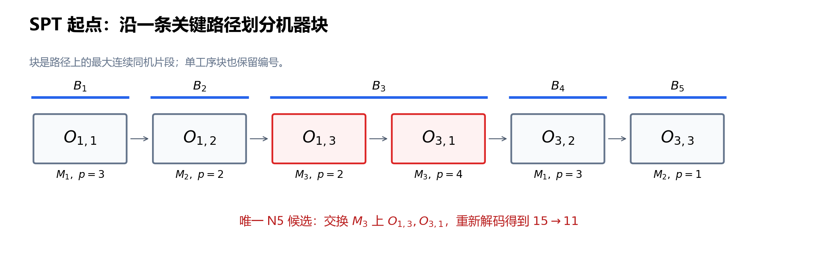

第 7 节：关键块邻域与 N5¶
状态：第一版，待 review。
本节目标：从一条关键路径提取关键块，正确生成 N5 的边界交换，解释候选为什么少、何时可行，以及小邻域会失去什么。
前置：第 4 节：关键结构、第 6 节：局部搜索。沿用指定机器、正加工时间、不可抢占、无换型和运输的基础模型。本节关于经典 N5 的讨论采用每个 job 至多访问每台机器一次的经典 JSSP；重复访问机器的扩展需重新检查条件。
7.1 六个相邻候选，是否都值得评价？¶
第 6 节从 SPT 构造解 \(\pi^{\mathrm S}\) 出发，对三台机器各试两次相邻交换。六个候选中，一项有环，四项变差，只有一项把 \(C_{\max}\) 从 15 降到 11。
这个有效移动交换 \(M_3\) 上的 \(O_{1,3},O_{3,1}\)。它们恰好位于同一条关键路径的同机连续片段上。能否先利用这个结构筛选，再花时间解码？
为便于复习，数据仍为：
| Job | 第一道工序 | 第二道工序 | 第三道工序 |
|---|---|---|---|
| \(J_1\) | \(O_{1,1}:(M_1,3)\) | \(O_{1,2}:(M_2,2)\) | \(O_{1,3}:(M_3,2)\) |
| \(J_2\) | \(O_{2,1}:(M_2,2)\) | \(O_{2,2}:(M_3,1)\) | \(O_{2,3}:(M_1,4)\) |
| \(J_3\) | \(O_{3,1}:(M_3,4)\) | \(O_{3,2}:(M_1,3)\) | \(O_{3,3}:(M_2,1)\) |
SPT 起点的队列是：
搜索对象仍是完整机器队列 \(\pi\)，评价仍是最早排程的 \(f(\pi)=C_{\max}(\pi)\)。关键块决定候选来源，不改变目标函数，也不免除候选评价。
7.2 必须改变关键限制，但不是随便选两个关键节点¶
若某条原关键路径的全部约束在新解中仍保留，其长度也不变，那么新解的 \(C_{\max}\) 至少等于原值。因此，严格改善必须解除每条原关键路径的原长度限制。
对同机相邻交换，只有被交换工序对的先后关系改变。这里可以用第 6 节的同机全部工序对定向图理解；实现若使用相邻弧，仍要正确修改外侧连接。
设选定关键路径为 \(P\)。若交换的机器工序对不在 \(P\) 的机器关系上，那么在完整定向图中 \(P\) 仍在，不能得到一步严格改善。这给出缩小候选的理由。
但以下三个条件不等价：
| 条件 | 能说明什么？ |
|---|---|
| 两道工序均为零松弛 | 各自在至少一条关键路径上，未必是同一条 |
| 两道工序在机器队列上相邻 | 具备相邻交换位置，不说明是否关键 |
| 两道工序在选定关键路径上由机器弧相连 | 是本节关键块相邻交换所需的结构 |
还要看弧是否紧，即 \(h_v=h_u+p_u\)，而不只是节点颜色是否都标红。多条关键路径并存时，改变其中一条不保证同时解除其他路径的限制。
7.3 关键块：先选路径，再分连续同机片段¶
选定一条从虚拟起点 \(\alpha\) 到终点 \(\omega\) 的关键路径 \(P\)，去掉虚拟节点。将真实工序序列划分为 最大连续同机片段，记为：
\(b\) 是这条路径的块数。第 \(\ell\) 块写为：
其中 \(k_\ell\) 是块长；\(v_{\ell,i}\) 是某道工序的简写，仍对应一个 \(O_{j,k}\)。“最大”表示不能再向路径左边或右边扩展而保持同机。
本节保留单工序片段的块编号，但它不产生交换。这样“首块”“尾块”始终指路径本身的首尾；不能先删除单工序片段，再把中间块误当成首块或尾块。
正加工时间保证同机路径连续工序也在机器队列中相邻。否则队列中的中间工序会给出更长的同机路径，使原先声称的紧弧不再紧。
SPT 解的一条关键路径为：
对应机器依次是 \(M_1,M_2,M_3,M_3,M_1,M_2\)，故：
| 块 | 机器 | 工序序列 | 长度 |
|---|---|---|---|
| \(B_1\) | \(M_1\) | \((O_{1,1})\) | 1 |
| \(B_2\) | \(M_2\) | \((O_{1,2})\) | 1 |
| \(B_3\) | \(M_3\) | \((O_{1,3},O_{3,1})\) | 2 |
| \(B_4\) | \(M_1\) | \((O_{3,2})\) | 1 |
| \(B_5\) | \(M_2\) | \((O_{3,3})\) | 1 |

图中的箭头是约束路径，不是车间的物理流向。该路径总加工长度为 \(3+2+2+4+3+1=15\)。
7.4 N5 的规则：边界、首尾例外与去重¶
N5 是基于选定关键路径的受限邻域，来源于 Nowicki 与 Smutnicki 的工作。算法论文还包含禁忌搜索及其他策略；单独实现这个邻域，并不等于复现整套算法。原论文：A Fast Taboo Search Algorithm for the Job Shop Problem
对 \(b\ge2\)，先按下表生成交换，再按工序身份去重：
| 块的位置 | 候选交换 |
|---|---|
| 首块 \(B_1\) | 只交换末两道 \((v_{1,k_1-1},v_{1,k_1})\) |
| 中间块 \(B_\ell\)，\(1<\ell<b\) | 交换前两道，或交换末两道；每次分别生成一个邻居 |
| 尾块 \(B_b\) | 只交换前两道 \((v_{b,1},v_{b,2})\) |
| 任意长度为 1 的块 | 不产生交换 |
长度为 2 的中间块，其“前两道”和“末两道”是同一对，只保留一个候选。长度为 2 的首块仍按“末两道”生成一个候选，尾块同理。不要先加入前后两对，再按名称把首块的前两道删除；这样可能把重合的唯一候选也删掉。
若整条关键路径只有一个块，经典模型下它全部在同一台机器上，路径长度等于该机器负载，已经达到全局下界，可以停止。此时不生成交换，由调用方核对下界并报告停止原因；下面的伪代码单列这一情形。图表核算脚本中的辅助函数 n5 只返回候选列表，不承担完整求解器的状态报告。
这些边界规则、长度为 2 的重合处理和邻域连通性限制，可对照 Jain、Rangaswamy 与 Meeran 的原始研究稿第 2–3 节。这里将“基于一条路径”的版本记为 \(\mathcal N_5(\pi;P)\)；若对多条路径取并集，应另外记录这一变体。
7.5 为什么内部交换通常被排除？¶
考虑关键路径中的某个块：
假设只交换内部相邻对 \(u_2,u_3\)。新机器链是：
原路径进入块的节点仍为 \(u_1\)，离开的节点仍为 \(u_5\)，块内的总加工时间未变。因此可以把原路径的前段、新机器链、原路径的后段接起来，得到一条同样长的路径。候选即使可行，也不可能一步严格改善。
首块的前两道交换在块长至少为 3 时有类似性质：路径可以从 \(\alpha\) 进入新的首道，遍历全部块工序，再从未改变的末道离开，保留原总长度。尾块末两道交换在块长至少为 3 时同理。
长度为 2 时必须区别处理。首块 \((u_1,u_2)\) 交换以后，原来从 \(u_2\) 离开的工艺弧未必还能接在遍历两道工序之后，前面的保长论证失效；这也解释了为什么规则仍保留该对。
这些论证排除的是 立即严格改善。一个当前不改善的内部交换，仍可能为后续探索创造机会。N5 缩小了每轮的评价工作，也删掉了一些平台步和变差步；不能据此推断所有搜索路径都得到了保留。
7.6 为什么这些关键相邻交换在经典模型下可行？¶
设 \(u\to v\) 是选定关键路径上的机器弧，\(u,v\) 在机器队列相邻，来自不同 job。关键路径上的这条弧满足：
使用同机全部工序对定向图，删除 \(u\to v\) 这一机器约束。若剩余图仍有一条经过中间真实工序的 \(u\leadsto v\) 路径，其加工时间总和严格大于 \(p_u\)，便会强迫 \(h_v>h_u+p_u\)，与紧弧矛盾。
不同 job 之间也没有直接固定工艺弧 \(u\to v\)。因此删掉机器弧以后，不再有从 \(u\) 到 \(v\) 的路径，加入反向弧 \(v\to u\) 不会闭环。再由第 6 节的等价表示，正确交换后的队列也可行。
这个论证依赖正加工时间、紧的关键机器弧以及没有另一条不可删除的同向直接约束。对于重复访问机器、零时长工序或扩展约束，不能不经检查照搬。
教学实现仍重新建图、拓扑判环和解码。它既用于防止实现错误，也让未来改变模型或邻域时保留统一接口。理论可行性不是保留旧入度、旧时间缓存的理由。
7.7 同一实例：六个候选缩成一个¶
对第 7.3 小节的 SPT 路径，只有 \(B_3\) 长度为 2，且是中间块。因此 N5 去重后只有：
这里 \(\operatorname{swap}_{r,i}\) 沿用第 6 节，交换 \(M_r\) 队列第 \(i,i+1\) 个位置。从原来的 \(M_3\) 队列生成：
重新解码得到第 6 节的 \(\pi^*\)，三个 job 的完工时间为 9、7、11，所以 \(f(\pi^*)=11\)。这一轮，完整相邻规则评价六个候选，N5 只评价一个，且保留了本例唯一的一步改善。
这只是本例的结果。换成前几节原排程 \(\pi^0\)，队列为：
它的唯一关键路径真实工序部分是 \(O_{3,1}\to O_{3,2}\to O_{2,3}\)，分为首块 \((O_{3,1})\) 和尾块 \((O_{3,2},O_{2,3})\)。N5 只生成尾块的前两道交换，即 \(\operatorname{swap}_{1,2}\)。
| 当前解 | 当前值 | N5 移动 | 候选值 | 差值 |
|---|---|---|---|---|
| \(\pi^{\mathrm S}\) | 15 | \(M_3\)，左位置 2 | 11 | \(-4\) |
| \(\pi^0\) | 11 | \(M_1\)，左位置 2 | 13 | \(+2\) |
后一行说明：属于 N5、打断关键路径、交换可行，都不保证改善。接受规则仍由下降搜索、SA 或 TS 决定。
7.8 多条路径、小邻域与局部最优¶
第 6 节的 \(\pi^{\mathrm L}\) 有两条长度为 12 的关键路径：
选 \(P_a\)，N5 候选是在 \(M_3\) 上交换 \(O_{1,3},O_{2,2}\)；选 \(P_b\)，候选是在 \(M_2\) 上交换 \(O_{1,2},O_{2,1}\)。两者都是等值步，候选值仍为 12。这与“另一条原关键路径未被改变”相符。
接受等值步以后再重算关键路径，下一步才可能到达 11。不能在接受前预先生成整个后续搜索的块。
路径选择需要约定。例如在最长路回溯的紧前序中，始终选工序编号最小者；或者使用记录种子的随机选择。若每轮重新随机选路径，则完整扫描某一轮 N5 只说明 该条路径诱导的邻域没有改善。
基于一条路径的 N5 不保证从任意初始解都能到达所有可行队列，甚至不保证任意起点都有一条通向最优解的 N5 路径。增大接受概率不能补回被邻域删掉的边。实际可用多起点、扰动、偶尔较大邻域等方式增加探索，但须分别评价其收益。
7.9 一个可检查的生成器¶
下面伪代码生成一次 N5 候选。critical_path 必须返回当前图的一条完整最长路径；blocks 保留单工序块；所有队列位置从 1 编号。
生成器没有接受候选。外层逐个复制队列、交换、解码，再使用选定接受策略。若预算在扫描途中结束，记录预算停止。
设 \(N\) 为真实工序总数、\(m\) 为机器数。已有解码结果后，路径回溯、分块与位置表可在线性时间内完成。\(b\ge2\) 时未经去重的候选数至多为 \(2b-2\)；单工序块、长度为 2 的中间块会进一步减少数量。使用一次 \(O(N+m)\) 的完整解码，整轮成本仍取决于实际候选数；不能仅凭“N5 小”就声称整个算法是常数时间。
7.10 易错点¶
| 容易写错的地方 | 应采用的检查 |
|---|---|
| 对所有零松弛工序任意两两交换 | 先有一条关键路径，再识别同机块和边界 |
| 把机器队列整段都当作关键块 | 块必须是选定路径上的连续片段 |
| 删除单工序块后重新标首尾 | 保留路径片段编号，单工序块只是不生成移动 |
| 长度为 2 的首块被完全删除 | 按允许的末两道生成，再去重 |
| 在相邻弧图中只反转中间弧 | 正确更新外侧关系，或直接重建图 |
| 认为 N5 中所有移动都改善 | \(\pi^0\) 的唯一候选把 11 变成 13 |
| 把 N5 停点叫作全局最优 | 除独立下界证明外，只能作指定邻域内的结论 |
| 把 N5 当作完整 TS 算法 | 邻域、评价、接受和记忆是不同部分 |
7.11 自检题¶
- SPT 起点的关键路径为什么有五个块，而不是三个？其中哪个块产生 N5 候选？
- 对一个长度为 5 的中间块，N5 交换哪两对？为什么交换第 2、3 道不能立即严格改善？
- 首块长度为 2 时是否生成候选？长度为 1 时呢？
- \(\pi^0\) 上 N5 的候选是什么？值从 11 变成多少？
- 关键相邻交换可行性的论证为什么需要紧弧、正加工时间和不同 job？
- 扫完某条路径的 N5 没有改善，能否推出全部相邻交换没有改善？能否宣布全局最优？
参考答案¶
- 块按路径上的连续同机片段划分，同一机器再次出现不能与前面隔开的片段合并。只有中间块 \((O_{1,3},O_{3,1})\) 长度为 2，产生一个候选。
- 前两道和末两道。第 2、3 道交换保留块首尾及总加工长度，可以拼接出与原关键路径一样长的路径。
- 长度为 2 时按末两道生成一个；长度为 1 时无候选。不能因前后两对重合而误删。
- 交换 \(M_1\) 上 \(O_{3,2},O_{2,3}\)，新值为 13。
- 紧弧排除有更长的替代路径，正加工时间使经过中间工序的替代路径严格更长；不同 job 排除不可删除的直接工艺弧。改变这些条件应重新判环。
- 一般都不能。N5 是受限邻域，结论还依赖路径选择；全局最优需另外的下界或完整精确搜索证据。
7.12 复习速记卡¶
| 要立即想起的问题 | 本节要点 |
|---|---|
| 为什么利用关键路径？ | 严格改善必须解除全部原关键路径的长度限制 |
| 关键块怎么找？ | 选一条关键路径，划分最大连续同机片段 |
| N5 中间块做什么？ | 分别交换前两道、末两道，重合则去重 |
| 首尾块的例外？ | 首块只取末两道，尾块只取前两道 |
| 单工序块怎么处理？ | 保留编号，不生成移动 |
| 小邻域的代价？ | 一些平台与变差探索边被删除，连通性不保证 |
| 怎样接入算法？ | 生成候选后仍解码，交给下降、SA 或 TS 接受 |
下一节：模拟退火：温度、接受概率与 current/best。关键结构回答“往哪里试”，SA 回答“为什么有时接受一个更差的可行候选”。
参考核验：2026-10-11。论文归属对照 Nowicki–Smutnicki 原论文页面，边界规则与局限对照上述原始研究稿；保长论证、紧弧可行性论证与 3×3 手算在本节展开。小实例枚举仅用于核对计算，未代替一般性质的证明。
提交前检查：本节例子及图由 第 7–9 节核算与绘图脚本 重算；检查路径、块、交换位置、目标值、符号及链接。最终格式检查范围见目录中的验收记录。